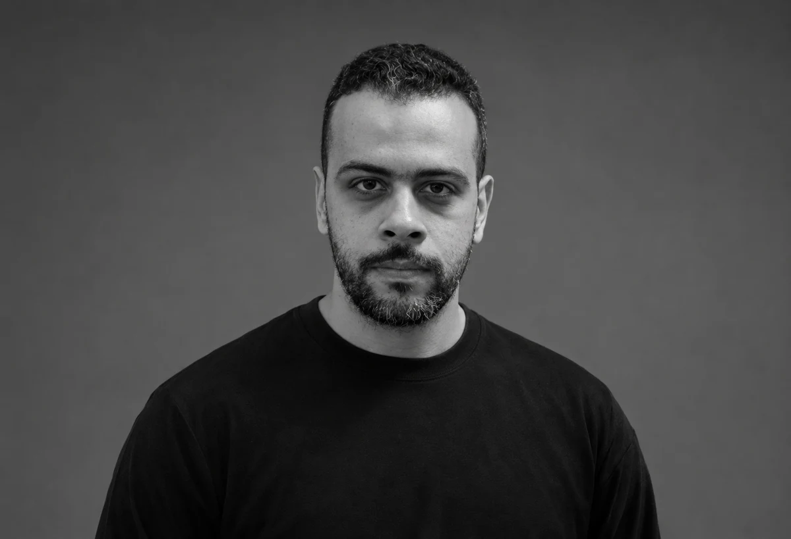

Bishop Integrated Solutions
أخصائي تحسين محركات البحث · دوام كامل · الإسكندريةخرائط طريق تحسين محركات البحث، والتدقيق الفني، وتحسين المحتوى، وبناء الروابط، وتحليل الأداء المتوافق مع أهداف العمل.
أنا أحمد يحيى. أساعد الشركات على تنمية زياراتها من البحث العضوي، بالجمع بين تحسين الجوانب التقنية للموقع، وفهم نية البحث، وتطوير استراتيجية المحتوى.

خمسة مشاريع أشرح فيها التحدي، وما نفّذته، والنتائج التي سجّلها Google Search Console.
عرض جميع دراسات الحالة الخمس
تعكس النتائج المشاريع الفردية وفترات المقارنة الموضحة في لقطات الشاشة المصدر. فهي ليست توقعات أو ضمانات.
أحدّد ما يحدّ من ظهور موقعك في البحث، وأضع خطة عمل بأولويات واضحة ومؤشرات قابلة للقياس.
هدف البحث وبنية المحتوى والروابط الداخلية ورسائل نتائج البحث.
اكتشف الخدمةتحليل الروابط الخلفية وبحث الفرص والتواصل اليدوي المدروس.
اكتشف الخدمةإمكانية الزحف والفهرسة وهندسة الموقع والأولويات الفنية.
اكتشف الخدمةأهداف العمل والجمهور ونية البحث والمشهد التنافسي.
ابحث عن القيود. رتب الفرص حسب التأثير والثقة والجهد.
ربط الإصلاحات الفنية وتحسينات المحتوى وبناء السلطة.
تتبع التقدم وتحقق من التغييرات واضبط مجموعة الأولويات التالية.
أنا متخصص في تحسين محركات البحث (SEO) مقيم في الإسكندرية، مصر، ولدي خبرة عملية في تحسين محركات البحث (SEO) منذ عام 2022. ويمتد عملي إلى عمليات التدقيق الفني واستراتيجية المحتوى والتحسين على الصفحة والتنفيذ خارج الصفحة.
أركز على فهم سبب تغير الأداء - وتحويل هذا الفهم إلى إجراءات واضحة للشركة.
تواصل على LinkedInخرائط طريق تحسين محركات البحث، والتدقيق الفني، وتحسين المحتوى، وبناء الروابط، وتحليل الأداء المتوافق مع أهداف العمل.
استراتيجية تحسين محركات البحث متعددة العملاء، والتحسين الفني، ومؤشرات الويب الأساسية، وحملات بناء السلطة.
تحسين محركات البحث (SEO) على الصفحة والتقني، وأبحاث المنافسين، وإستراتيجية الكلمات الرئيسية، وإعداد تقارير الأداء.
التدريب العملي والتنفيذ عبر التحسين التقني لمحركات البحث، على الصفحة وخارجها.
أخبرني عن موقعك على الويب، أو التحدي الذي تواجهه، أو الفرصة التي تخطر في بالك.